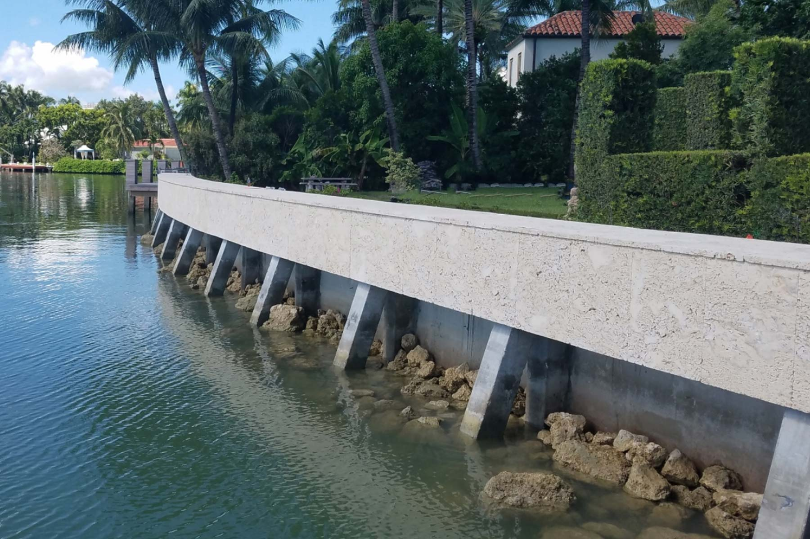

Sea Walls are barriers consisting of concrete, metal, or other durable materials that are built along coastlines to protect land and infrastructure from waves, storm surge, and flooding.
Due to local government and community regulations, some areas are unable to implement natural barriers, leaving sea walls that next best alternative.
Sea walls are most costly and most often more time consuming to install than natural barriers.
As water levels rise and waves become more aggressive, sea walls block the impact and minimize flooding.
However, sea walls can prevent sea life from transitioning from water to land and vice versa.
This wall often consists of many supports and durable materials, allowing it to withstand harsh waves and rising water.
However, sea walls can disrupt natural ecosystems and may increase erosion in nearby areas.
To decrease the risk of erosion, sea walls must be maintained.
Sea walls are often built along shorelines to protect coastal communities.
These walls create a more safe area behind them, helping protect buildings, roads, and other infrastructure from water exposure.
This can significantly reduce storm surge and flooding risk in these protected areas.